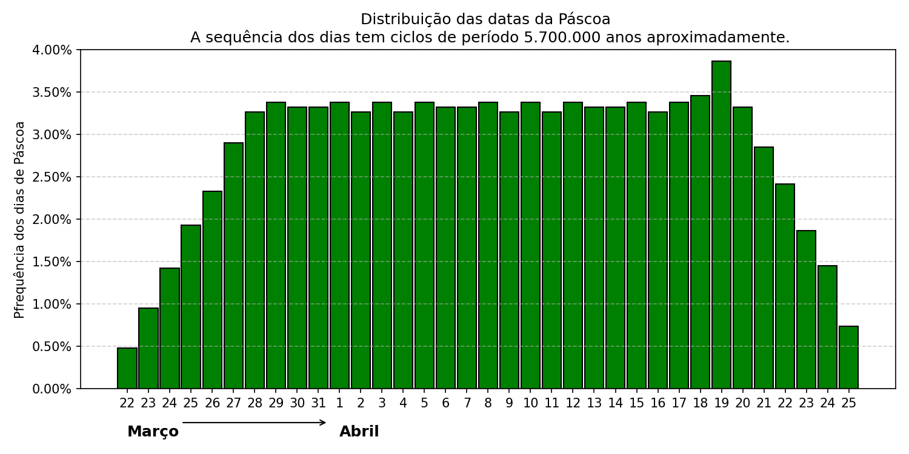

O carnaval é um dos feriados móveis do calendário, os outros são: Sexta-Feira Santa, Páscoa e Corpus Christi. A data do feriado de Carnaval (a terça-feira) é definida pela data da Páscoa, ocorre 47 dias antes da Páscoa.
A Páscoa cristã tem relação com o Pesach (Páscoa judaica). Há registros de que até o século 2 muitos cristãos celebravam a festa no dia 14 de Nisan do calendário judaico, mesma data do Pesach. Alguns grupos passaram a celebrar a Páscoa no domingo após o Pesach. Convencionou-se então que a Páscoa seria celebrada no domingo após a primeira lua cheia da primavera, guiando-se pela data do equinócio. Cada um continuou a celebrar na data que considerava correta, até o Primeiro Concílio de Niceia, em 325 dC, convocado pelo imperador Constantino para unificar as normas e a tradição cristã. O concílio decidiu que todos os cristãos deveriam celebrar a Páscoa na mesma data e que esta seria separada do Pesach.
A Páscoa está definida como sendo o primeiro domingo após a primeira Lua cheia que ocorre após ou no equinócio do outono do hemisfério sul.
Os equinócios (o instante em que o Sol, em sua órbita como vista da Terra, cruza o equador celeste --- a linha do equador terrestre projetada na esfera celeste) ocorrem nos meses de março e setembro. Em março, o equinócio marca o início da primavera no hemisfério norte e do outono no hemisfério sul.
As datas dos equinócios variam pois o período entre dois equinócios de março não têm exatamente 365 dias, fazendo com que a hora precisa do equinócio varie ao longo de um período de dezoito horas, que não se encaixa necessariamente no mesmo dia. Ao longo do mesmo século, as datas dos equinócios tendem a ocorrer cada vez mais cedo. No século XXI só houve dois anos em que o equinócio de março aconteceu no dia 21 (2003 e 2007); nos demais, o equinócio tem ocorrido em 20 de março e prevê-se que, a partir de 2044, passe a haver anos em que o equinócio aconteça no dia 19.
O problema de se calcular de fato a data da Páscoa foi resolvido pelo concílio ao se fixar "datas eclesiásticas" diferentes das datas astronômicas. O decreto do papa Gregório XIII de 24/02/1582, seguindo o concílio de Nicéia, a Páscoa é no primeiro domingo depois da Lua Cheia que ocorre em ou logo após 21 de março. Entretanto, a data da Lua Cheia não é a real, mas a definida nas Tabelas Eclesiásticas, que, sem levar totalmente em conta o movimento complexo da Lua, podia ser calculada facilmente, e está próxima da lua real.
De acordo com essas regras, a Páscoa nunca acontece antes de 22 de março nem depois de 25 de abril.
A terça-Feira de carnaval ocorre 47 dias antes da Páscoa. Logo o Carnaval pode acontecer de 4 de fevereiro a 9 de março.
Carregando Python (Pyodide)...
def data_pascoa(ano):
a = ano % 19
b = ano // 100
c = ano % 100
d = b // 4
e = b % 4
f = (b + 8) // 25
g = (b - f + 1) // 3
h = (19 * a + b - d - g + 15) % 30
i = c // 4
k = c % 4
L = (32 + 2 * e + 2 * i - h - k) % 7
m = (a + 11 * h + 22 * L) // 451
mes = (h + L - 7 * m + 114) // 31
dia = ((h + L - 7 * m + 114) % 31) + 1
return dia, mes
def data_carnaval(ano):
from datetime import date, timedelta
dia, mes = data_pascoa(ano)
carnaval = date(ano, mes, dia) - timedelta(days=47)
return carnaval.day, carnaval.month
